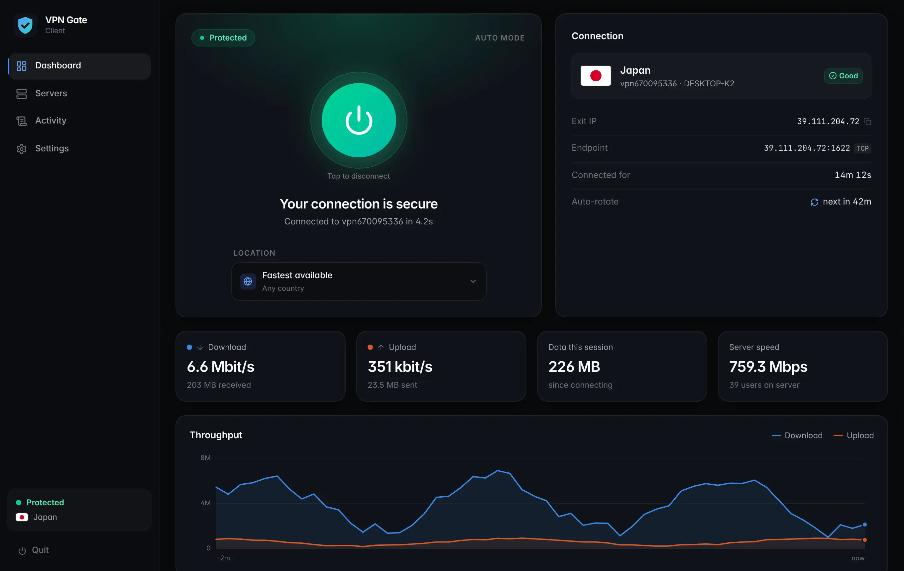

Smart auto-connect
Walks the best-ranked servers and only declares success when traffic really flows through the tunnel.
A fast desktop client for the volunteer-run VPN Gate network. One click finds a server that actually works — the app installs everything it needs by itself.
Windows 10/11 & Linux · open source · no account

Features
Volunteer servers come and go. The app does the tedious part — testing, retrying, remembering — so you just press connect.
Walks the best-ranked servers and only declares success when traffic really flows through the tunnel.
On Windows it downloads and installs the official, signed OpenVPN package automatically. On Linux, one click sets everything up.
Optionally hop to a fresh server on a schedule — every 1 to 24 hours — without lifting a finger.
Remembers every success and failure. Servers that keep failing are benched for a while so retries never waste time.
Exit IP, uptime, real-time download and upload speeds, and a full activity log when you want the details.
Choose one or more countries, favorite the servers you like, or let the app pick the fastest available.
How it works
One file, no installer. On Windows, accept the administrator prompt — a VPN needs it to create the network tunnel.
First launch fetches the OpenVPN engine and network driver, verifies them, and installs them — with a progress bar, not a wizard.
The app tests servers until one works, then keeps you connected — reconnecting automatically if a server drops.
Auto-rotate
Turn on auto-rotate and the app moves you to a different healthy server in your chosen location every 1, 2, 3, 6, 12 or 24 hours. Servers you just left go to the back of the queue, so each rotation really changes your exit.
The shortest interval is one hour, by design: VPN Gate servers are donated by volunteers, and we'd rather not hammer them.
Download
The latest release · free and open source
Windows 10 & 11 · 64-bit
.exe — no installerx86-64 & ARM64 · any modern distro
tar xzf vpngate-client-linux-amd64.tar.gz && ./vpngate-client/vpngate-client
The Windows app isn't code-signed yet, so SmartScreen may say "Windows protected your PC" — click More info → Run anyway. Every release lists SHA-256 checksums.
FAQ
Yes. The app is open source, and it connects to VPN Gate, a free academic project of the University of Tsukuba whose servers are donated by volunteers.
The app has no account and no tracking — it runs entirely on your computer. But VPN Gate servers are run by volunteers who can see your unencrypted traffic, and the project keeps connection logs. It's great for getting around geo-blocks and hiding your IP from websites; for sensitive work, stick to HTTPS sites.
Creating a VPN tunnel means adding a network adapter and changing routes, which every operating system restricts to administrators. On Linux, the one-click setup grants the app permission to start OpenVPN only, so you aren't asked for your password every time.
Every rotation opens a new session on a volunteer's server. A one-hour floor keeps the load on them reasonable. You can still switch servers manually whenever you want.
Only the official OpenVPN Community package (with its TAP network driver) on Windows, pinned to a verified checksum — or the openvpn package from your distro on Linux. The app itself is a single file you can delete at any time.
Not yet — Windows and Linux are supported today.